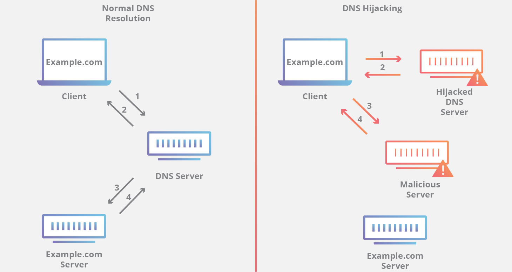

Como o DNS é vital para uma vasta gama de aplicações, o
roubo de domínios pode ser algo bastante lucrativo para quem
o faz. Para roubar um domínio, um atacante fornece um registro
DNS incorreto para uma requisição da vítima
(spoofing),
em tempo real, ou ainda, off-line, injetando registros de
recursos falsificados na zonefile
(tipo de arquivo usado por softwares de servidores DNS,
como o BIND), cujo servidor de domínio responsável repassa
como resposta às requisições. Neste último caso, o
atacante precisa conhecer previamente brechas ou no sistema
operacional utilizado pelo servidor ou no software
(BIND, DNS Server).
Um servidor que armazena esse registro envenena seu cache
e, consequentemente, passa a direcionar os clientes e as
aplicações por ele servidas para o endereço malicioso.

Cache poisoning é o método
mais eficiente para realizar um sequestro de domínio.
Pode ser
usado para roubo de credenciais, distribuir malwares,
censurar, vigiar, falsear serviços, derrubar domínios,
entre outros.
Em 15 de Março de 2014 o servidor DNS público da Google,
8.8.8.8/32, foi sequestrado e teve seu tráfego redirecionado
para divisões da Venezuela e Brasil de uma empresa de
telecomunicações britânicas devido a uma vulnerabilidade no
Border Gateway Protocol (BGP), utilizado por grandes
corporações/ASes.
Formas de mitigar o ataque
O mecanismo mais indicado seria o DNSSEC, por prover
segurança através de autenticação dos dados e verificar
sua integridade com criptografia de chave pública.
No entanto esse processo aumenta consideravelmente o tempo,
a ponto de tornar o DNS como o conhecemos impraticável,
como é apontado em Spoofing.
Além deste, em geral temos abordagens envolvendo mecanismos
de Firewall para detectar o ataque, ou formas de
aumentar a entropia nas requisições DNS com o intuito de
dificultar a validação de uma resposta enviada por um atacante.
Através do Firewall é possível definir um tempo e uma ordem
das respostas para decidir quando se trata de um ataque, mas
em ambos os casos é preciso criar mais campos para a
validação das respostas, sem que o sistema demande grandes
quantidades de processamento, como no caso do DNSSEC.
Por fim, como o DNS Hijacking se trata de uma finalidade
dos ataques de Spoofing e Cache Poisoning, as mesmas
defesas propostas podem ser aplicadas.